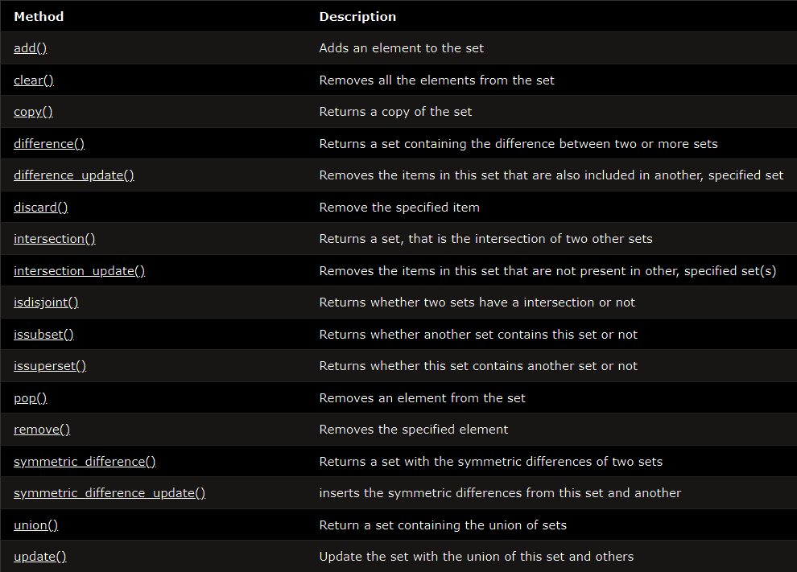

sets are immutable sequences
, means it's values are not changeable
different kind of data types can be stored
no duplicate members
(will be auto removed)
Unordered can not be indexed using [ ]
Sets can be created by several means:
- Use a comma-separated list of elements within braces: {'jack', 'sjoerd'}
- Use a set comprehension: {c for c in 'abracadabra' if c not in 'abc'}
- Use the type constructor: set(), set('foobar'), set(['a', 'b', 'foo'])
built-in methods that you can use on sets:

Accessing Set Items


Note: Once a set is created, you cannot change its items,
but you can add new items by add() or update(iterable).
Use remove() to remove an item but it will raise an exception
if item is not found. So use discard() instead, won't raise exception.
Join Two Sets
You can use the union() method that returns a new set containing all items from both sets, or the
update() method that inserts all the items from one set into another:


set comprehension
same as list comprehension but { } instead of [ ]